在 Visual Studio Code 中编辑 Python
Visual Studio Code 是一款强大的 Python 源代码编辑工具。编辑器包含多种功能，帮助你在编写代码时提高工作效率。有关在 Visual Studio Code 中进行编辑的更多信息，请参阅基本编辑和代码导航。
在本概述中，我们将介绍由 Python 扩展提供的特定编辑功能，包括如何通过用户和工作区设置自定义这些功能的步骤。
自动补全和 IntelliSense
IntelliSense 是与代码完成相关的代码编辑功能的统称。花点时间看一下下面的示例。当键入 print 时，请注意 IntelliSense 如何填充自动补全选项。当用户开始键入名为 greeting 的变量时，也会获得一个选项列表。
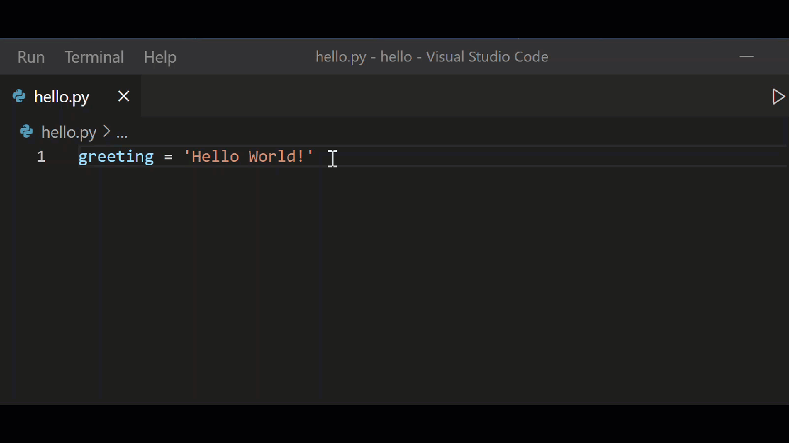
自动补全和 IntelliSense 适用于当前工作文件夹内的所有文件。也适用于在标准位置安装的 Python 包。
Pylance 是 VS Code 中 Python 的默认语言服务器，它与 Python 扩展一同安装，以提供 IntelliSense 功能。
Pylance 基于微软的 Pyright 静态类型检查工具，利用类型存根（.pyi 文件）和惰性类型推断来提供高性能的开发体验。
有关 IntelliSense 的更多常规信息，请参阅 IntelliSense。
提示：查看 VS Code 的 IntelliCode 扩展。IntelliCode 为 Python 中的 IntelliSense 提供了一组 AI 辅助功能，例如根据当前代码上下文推断最相关的自动补全项。有关更多信息，请参阅 IntelliCode for VS Code FAQ。
自定义 IntelliSense 行为
默认启用完整的 IntelliSense 功能集可能会使你的开发体验变慢，因此 Python 扩展启用了一组最小功能集，使你在保持高性能体验的同时仍能高效工作。不过，你可以通过多种设置来自定义分析引擎的行为。
启用自动导入
Pylance 为工作区中的模块以及环境中安装的包提供自动导入建议。在编辑器中键入时，你可能会获得补全建议。接受建议后，自动导入会自动将相应的 import 语句添加到你的文件中。
你可以通过在设置中将 python.analysis.autoImportCompletions 设置为 true 来启用自动导入。默认情况下，自动导入是禁用的。
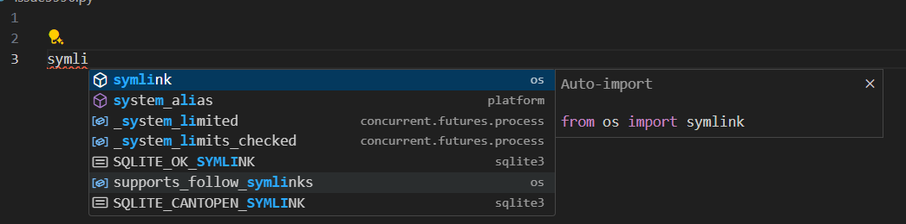
为自定义包位置启用 IntelliSense
要为安装在非标准位置的包启用 IntelliSense，请将这些位置添加到 settings.json 文件中的 python.analysis.extraPaths 集合中（默认集合为空）。例如，你可能在自定义位置安装了 Google App Engine，如果使用 Flask，则在 app.yaml 中指定。在这种情况下，你可以按如下方式指定这些位置：
Windows：
"python.analysis.extraPaths": [
"C:/Program Files (x86)/Google/google_appengine",
"C:/Program Files (x86)/Google/google_appengine/lib/flask-0.12"]macOS/Linux：
"python.analysis.extraPaths": [
"~/.local/lib/Google/google_appengine",
"~/.local/lib/Google/google_appengine/lib/flask-0.12" ]有关可用的 IntelliSense 控件的完整列表，你可以参考 Python 扩展的代码分析设置和自动补全设置。
你还可以自定义自动补全和 IntelliSense 的常规行为，甚至可以完全禁用这些功能。你可以在自定义 IntelliSense 中了解更多。
使用 AI 增强补全功能
GitHub Copilot 是一款 AI 驱动的代码补全工具，可帮助你更快、更智能地编写代码。你可以在 VS Code 中使用 GitHub Copilot 扩展来生成代码，或从它生成的代码中学习。

GitHub Copilot 为多种语言和各种框架提供建议，尤其适用于 Python、JavaScript、TypeScript、Ruby、Go、C# 和 C++。
你可以在 Copilot 文档中了解更多关于如何开始使用 Copilot 的信息。
导航
在编辑时，你可以右键单击不同的标识符，以使用几个便捷的命令：
- 转到定义（
kb(editor.action.revealDefinition)）从你的代码跳转到定义对象的代码中。此命令在你使用库时很有帮助。 - 速览定义（
kb(editor.action.peekDefinition)）类似，但直接在编辑器中显示定义（在编辑器窗口中腾出空间，避免遮挡任何代码）。按kbstyle(Escape)关闭速览窗口，或使用右上角的 x。 - 转到声明 跳转到代码中声明变量或其他对象的位置。
- 速览声明 类似，但直接在编辑器中显示声明。同样，使用
kbstyle(Escape)或右上角的 x 关闭速览窗口。快速修复
添加导入
使用 Pylance 时，添加导入快速修复使你能够快速完成为环境中安装的模块添加 import 语句。当你在编辑器中开始键入包名称时，会出现一个代码操作来自动完成源代码行。将鼠标悬停在文本上（标记有波浪线），然后选择代码操作灯泡图标。然后你可以从潜在导入列表中进行选择。
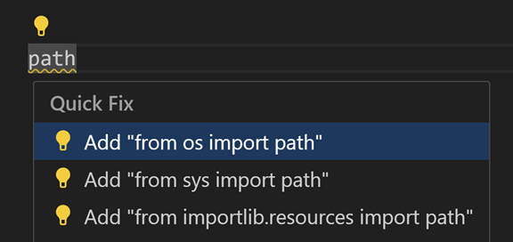
此代码操作还能识别以下常见 Python 包的流行缩写：numpy 为 np、tensorflow 为 tf、pandas 为 pd、matplotlib.pyplot 为 plt、matplotlib 为 mpl、math 为 m、scipi.io 为 spio、scipy 为 sp、panel 为 pn、holoviews 为 hv。
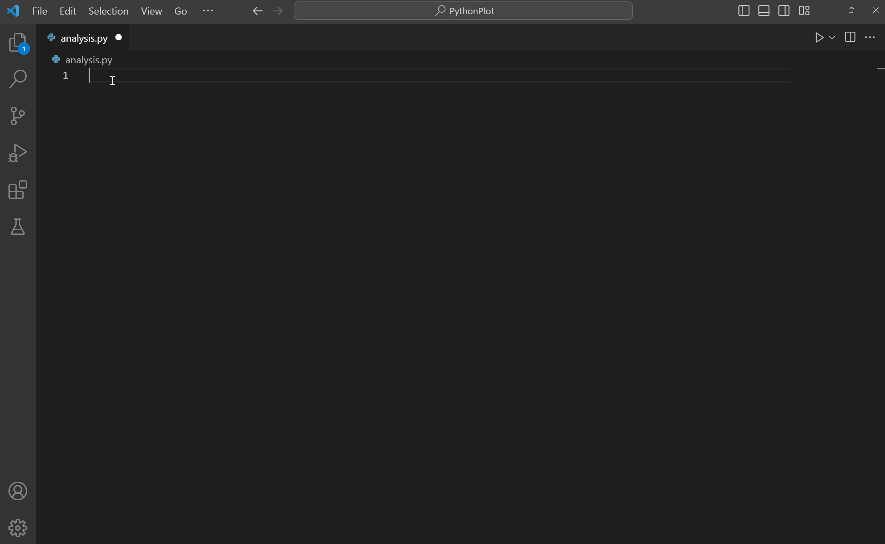
导入建议列表显示前 3 个高置信度的导入选项，优先级排序基于：最近使用的导入、来自同一模块的符号、来自标准库的符号、来自用户模块的符号、来自第三方包的符号，最后按模块和符号名称排序。
搜索其他导入匹配项
默认情况下，添加导入快速修复仅显示 3 个高置信度的导入选项。如果它们没有列出你要查找的内容，你可以使用 Pylance 的搜索其他导入匹配项快速修复来处理缺失导入错误。此快速修复显示一个快速选择菜单，使你能够搜索与前缀匹配缺失导入符号的导入选项。
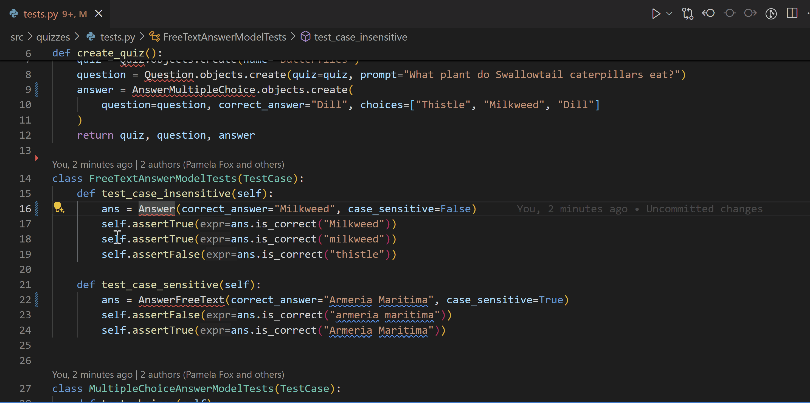
更改拼写
当未解析变量或缺失导入诊断可能由拼写错误引起时，Pylance 会显示更改拼写快速修复。此代码操作根据工作区中找到的最接近匹配项建议符号的正确拼写。
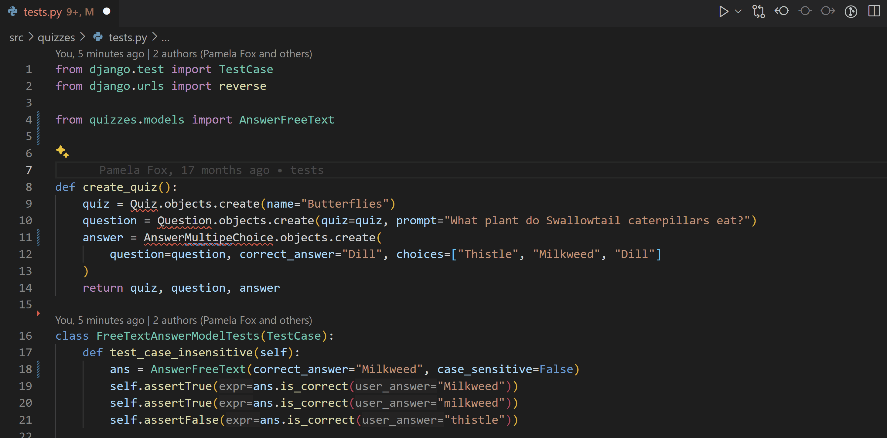
注意：对于用户符号，这些快速修复将仅从定义它们的文件中建议导入。不支持从用户符号被外部/导入的文件中建议导入。
>
另请注意，对于来自已安装包（通常位于 Python 环境的site-packages文件夹下）的符号，只有那些在包的根文件夹中定义的符号（例如在其__init__.py文件中）才会被这些快速修复建议。你可以通过python.analysis.packageIndexDepths设置为特定包自定义此行为，但请注意这可能会影响 Pylance 的性能。
重构
Python 扩展通过 Pylance 扩展添加了以下重构功能：提取变量、提取方法、重命名模块、移动符号和实现所有继承的抽象类。它还支持实现其他重构功能的扩展，例如排序导入。
提取变量
提取当前作用域内所选文本的所有相似出现，并将其替换为新变量。
你可以通过选择要提取为变量的代码行来调用此命令。然后选择旁边显示的灯泡图标。
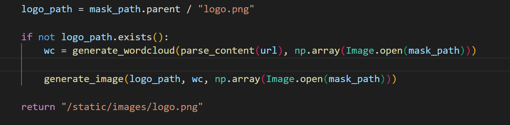
提取方法
提取当前作用域内所选表达式或代码块的所有相似出现，并将其替换为方法调用。
你可以通过选择要提取为方法的代码行来调用此命令。然后选择旁边显示的灯泡图标。
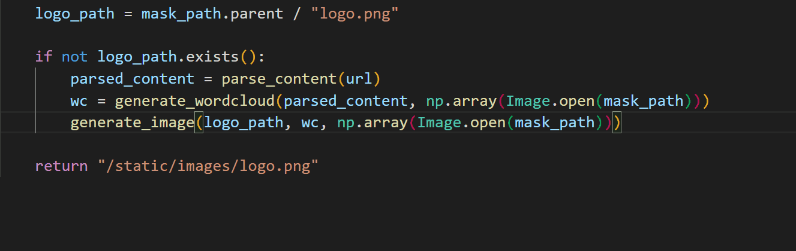
重命名模块
在 Python 文件/模块被重命名后，Pylance 可以找到所有可能需要更新的实例，并为你提供所有更改的预览。
要自定义需要更新哪些引用，你可以在重构预览中按行或从文件级别切换复选框。做出选择后，你可以选择应用重构或放弃重构。

移动符号
Pylance 扩展提供了两个代码操作，以简化将符号移动到不同文件的过程：
- 将符号移动到...：显示一个文件选择器，用于选择符号要移动到的目标文件。
- 将符号移动到新文件：创建一个以符号命名的新文件，位于调用代码操作的源文件所在的同一目录中。
你可以通过将鼠标悬停在要移动的符号上，然后选择所需操作旁边出现的灯泡图标来访问这些代码操作。或者，你可以右键单击符号，然后从上下文菜单中选择重构...。
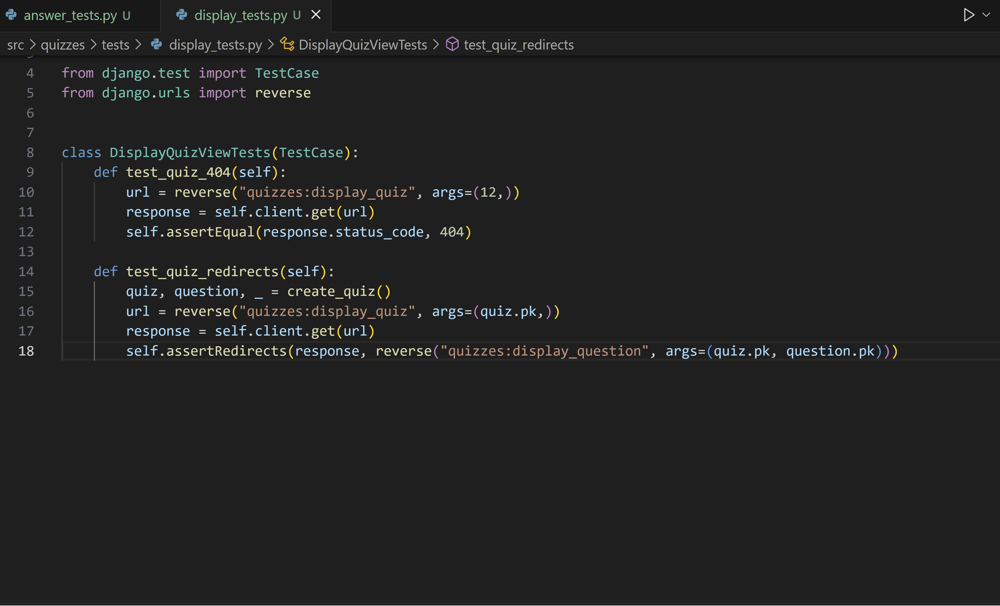
实现所有继承的抽象类
在 Python 中，抽象类充当其他类的"蓝图"，通过促进子类遵循清晰的结构和要求来帮助构建模块化、可重用的代码。要在 Python 中定义抽象类，你可以创建一个继承自 abc 模块中 ABC 类的类，并用 @abstractmethod 装饰器标注其方法。然后，你可以创建继承自该抽象类的新类，并为基础方法定义实现。
Pylance 提供了一个代码操作来简化创建这些类的过程。当你定义一个继承自抽象类的新类时，现在可以使用实现所有继承的抽象类代码操作来自动实现父类的所有抽象方法和属性：
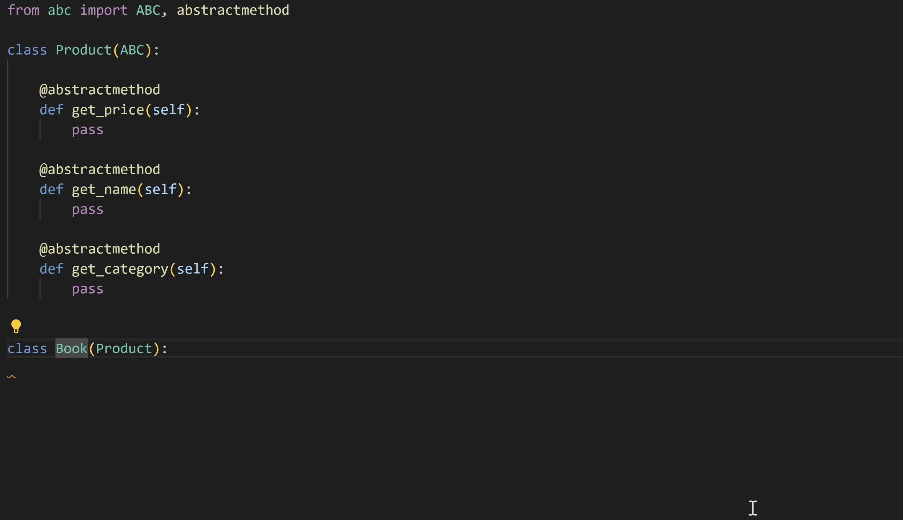
排序导入
Python 扩展支持诸如 isort 和 Ruff 等实现排序导入功能的扩展。此命令将来自同一模块的特定导入合并为单个 import 语句，并按字母顺序组织 import 语句。
你可以通过安装支持排序导入的扩展，然后打开命令面板（kb(workbench.action.showCommands)）并运行整理导入来调用此功能。
提示：你可以为 editor.action.organizeImports 命令分配键盘快捷键。
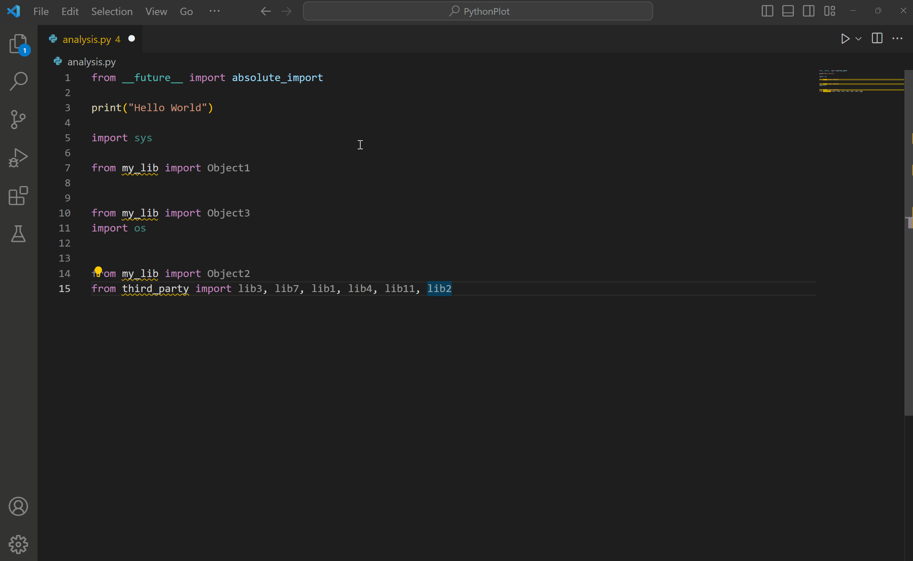
疑难解答
有关常见 IntelliSense 和 Python 编辑问题的帮助，请查看下表：
| 问题 | 原因 | 解决方案 | ||
|---|---|---|---|---|
| --- | --- | --- | ||
| Pylance 在添加导入时仅提供顶层符号选项。 | 默认情况下，仅索引顶层模块（深度=1）。 例如，你可能会看到 import matplotlib 作为建议，但默认情况下不会看到 import matplotlib.pyplot。 | 尝试通过 python.analysis.packageIndexDepths 增加 Pylance 可以索引已安装库的深度。查看代码分析设置。 | ||
| Pylance 未自动添加缺失的导入 | 自动导入补全设置可能已禁用。 | 查看启用自动导入部分。 | ||
| 自动导入已启用，但 Pylance 未自动导入工作区其他文件中定义的符号。 | 用户定义的符号（那些不来自已安装包或库的符号）仅当它们已在编辑器中打开的文件中使用过时才会被自动导入。 否则，它们只能通过添加导入快速修复使用。 | 使用添加导入快速修复，或确保先在编辑器中打开工作区中的相关文件。 | ||
| Pylance 在处理大型工作区时似乎很慢或消耗过多内存。 | Pylance 分析是对给定工作区中所有文件进行的。 | 如果存在已知可以从 Pylance 分析中排除的子文件夹，你可以将其路径添加到 python.analysis.exclude 设置中。或者，你可以尝试将 python.analysis.indexing 设置为 false 来禁用 Pylance 的索引器（注意：这也会影响补全和自动导入的体验。在代码分析设置中了解更多关于索引的信息）。 | ||
| 无法将自定义模块安装到 Python 项目中。 | 自定义模块位于非标准位置（不是使用 pip 安装的）。 | 将位置添加到 python.autoComplete.extraPaths 设置并重启 VS Code。 |
Pylance 诊断
Pylance 默认在"问题"面板中为 Python 文件提供诊断信息。
以下列表是 Pylance 提供的一些最常见的诊断信息以及如何修复它们。
importResolveSourceFailure
当 Pylance 能够找到导入包的类型存根但无法找到包本身时，会出现此错误。当你尝试导入的包未安装在所选的 Python 环境中时，可能会发生这种情况。
如何修复
- 如果包已安装在不同的解释器或内核中，请选择正确的解释器。
- 如果包未安装，你可以通过在已激活的终端中运行以下命令来安装它：
python -m pip install {package_name}。importResolveFailure
当 Pylance 无法找到你要导入的包或模块及其类型存根时，会出现此错误。
如何修复
- 如果你正在导入一个模块，请确保它存在于你的工作区中，或存在于
python.autoComplete.extraPaths设置中包含的位置。 - 如果你正在导入一个未安装的包，你可以通过在已激活的终端中运行以下命令来安装它：
python -m pip install {package_name}。 - 如果你正在导入一个已安装在不同解释器或内核中的包，请选择正确的解释器。
- 如果你正在使用可编辑安装并且当前设置为使用导入钩子，请考虑改用仅包含文件路径的
.pth文件，以增强兼容性并确保更流畅的导入行为。在 Pyright 文档中了解更多。importCycleDetected
当 Pylance 检测到两个或多个模块之间存在循环依赖时，会出现此错误。
如何修复
尝试重新排列导入语句的顺序以打破循环依赖。
Pylance 诊断的严重性可以通过 python.analysis.diagnosticSeverityOverrides 设置进行自定义。查看设置参考以获取更多信息。
后续步骤
- Linting - 启用、配置和应用各种 Python linter。
- 调试 - 学习在本地和远程调试 Python。
- 测试 - 配置测试环境，发现、运行和调试测试。
- 基本编辑 - 了解强大的 VS Code 编辑器。
- 代码导航 - 在源代码中快速移动。
- IntelliSense - 了解 IntelliSense 功能。
- Jupyter 支持 - 了解如何开始使用 Jupyter Notebooks。
- Python 扩展模板 - 创建扩展以集成你喜爱的 Python 工具。